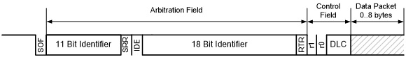
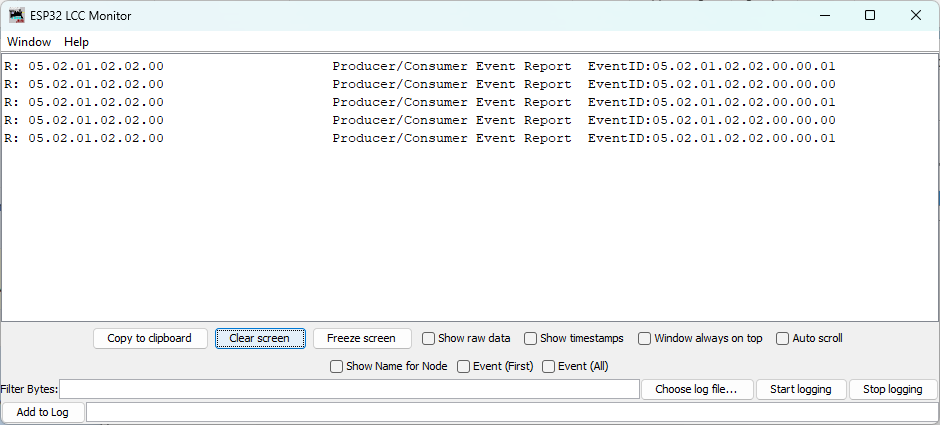

OpenLCB Programmer’s Guide
by John Socha‑Leialoha
This edition is current as of 2025-12-23.
I wrote this book to help developers get started with OpenLCB. I used GitHub Copilot to help draft the text; during writing Copilot was provided access to the OpenMRN and OpenMRN‑Lite source code, the NMRA LCC standards, and NMRA LCC technical notes to assist with examples and explanations.
The source for this book is available at the project’s GitHub repository: openlcb/OpenLCB_Technical_Introduction.
Feedback and contributions are welcome — please open an issue or submit a pull request on the repository’s issues page: openlcb/OpenLCB_Technical_Introduction issues.
Documentation Copyright © 2025 John Socha‑Leialoha. See the repository for license details: LICENSE_DOCS.md and LICENSE.
Introduction
Purpose
The purpose of this book is to help you get up to speed on OpenLCB so you can start creating LCC products. There are a lot of concepts and we’ll go into just enough depth to get you going, without bogging you down with all the details and possibilites. The standards and the technical notes have a lot more details.
Focus of this book
We’re going to focus on how to create a device (node) that can be added to an OpenLCB network. To make learning easier, we’ll start with WiFi/TCP transport, which allows you to see network traffic easily and test without special hardware. Later chapters will cover adding CAN bus hardware for traditional LCC installations.
Assumptions
We’re assuming you’ve used LCC products, and therefore already understand concepts like the producer-consumer model. We also assume you’ve written code for microcontrollers and have worked with I/O pins.
About Names
Let’s start with what to some might be confusing—the names LCC vs OpenLCB. LCC is a brand name owned by the NMRA. It covers a set of standards that have been adopted by the NMRA for Layout Command Control (hence the LCC).
OpenLCB is the name of the working group that created the standards approved by the NMRA and continues to create new standards. This is a group of dedicated volunteers who are working to fulfill the dream.
You’ll notice that the standards use the name OpenLCB everywhere except for the header at the top of the document. In this book, as in the standards, we’ll use the term OpenLCB everywhere except this page.
Node
A Node is the basic building block of an OpenLCB network. It’s a device that can send and receive OpenLCB messages. We’ll describe these messages in more detail in a later chapter.
Each node has a unique 6-byte ID that must be assigned by the manufacturer. We’ll describe in a later chapter how you can get your own set of IDs to use in your products (or DIY boards).
Transport Layers
OpenLCB is designed to work over different physical transport layers. The two main options are:
CAN (Controller Area Network): The traditional transport for OpenLCB, used in most commercial LCC products. CAN uses a two-wire bus with excellent noise immunity and built-in arbitration, making it ideal for model railroad environments. It requires CAN transceiver hardware and proper bus termination.
WiFi/TCP: An alternative transport that uses standard WiFi networking and TCP/IP. This is particularly useful for development and learning because:
- No special hardware required beyond WiFi-capable microcontrollers
- Easy to monitor traffic using standard network tools
- Can connect to JMRI and other tools over your home network
- Simplifies initial prototyping and testing
In this book, we’ll start with WiFi/TCP transport because it’s more accessible for learning. Once you understand the core concepts, the principles transfer directly to CAN-based implementations. Future chapters will cover adding CAN hardware.
Both transports use the same OpenLCB protocols and message formats—only the physical layer changes.
Network Architecture
An OpenLCB network is made up of participants with different roles. The two primary roles are:
Nodes — devices that produce and consume events. Each node has a unique identifier and announces itself during startup.
Hubs — services that route and forward messages between participants. A hub may be implemented differently depending on the transport (for example, as a network server for TCP-based transports or as a bridge to a CAN bus). Hubs are optional in some deployments; on shared physical buses messages are exchanged directly between participants.
A single device can implement both node and hub functions. Examples in later chapters show convenient development setups where one device acts in both roles, but the concepts below are transport-agnostic.
Here’s a conceptual architecture diagram:
graph TB subgraph DeviceA["Device A"] NodeA["Node A<br/>(produces/consumes events)"] end subgraph Hub["Hub (optional)"] Router["Message Router / Hub"] end Monitor["Monitor / Tool<br/>(optional)"] DeviceB["Device B<br/>(other node)"] CAN["CAN Bus (optional)"] DeviceA ---|messages| Router DeviceB ---|messages| Router Monitor ---|connects| Router CAN -.->|physical transport| Router style DeviceA fill:#e1f5ff style NodeA fill:#fff9c4 style Hub fill:#f3e5f5 style CAN fill:#eeeeee style DeviceB fill:#eeeeee
What this shows:
- Node: Produces and consumes events and announces itself on the network during startup.
- Hub: Forwards messages between connected participants and may accept connections from monitoring tools.
- Monitor/Tool: Observes network traffic and can send test messages.
- Future Expansion: Multiple nodes and transports (e.g., CAN bridges, network servers) can be integrated behind hubs.
Why this design works:
- Separation of concerns: The messaging protocol is transport-agnostic; nodes, hubs, and tools speak the same message formats regardless of physical layer.
- Scalable: Hubs enable multiple devices and tools to interconnect without changing node implementations.
- Flexible: Hubs can be implemented differently per transport, allowing the same protocol to work in embedded, wired, and networked environments.
Platform and transport choices (for example, why this book uses ESP32 and WiFi/TCP for early examples) are discussed in Chapter 2 (Getting Started).
Introduction to CAN
Controller Area Network (CAN) is a standard that was initially created in 1981 by Bosch, and has since been used for factory automation and communication networks in cars, to name just a few uses. Today there are hundreds of billions of devices using CAN bus in daily use.
As a result, there are a number of relatively inexpensive ICs available that fully implement the CAN specifications out of the box. By using CAN controllers and drivers, you do not have to write highly time-sensitive code. Instead, you can focus on implementing support for the messages in the application layers, which is a “relatively” simple task compared with implementing a transport layer.
CAN Messages
CAN transmits messages, called frames on the bus. Every other device (node) on the bus can (and must) listen to all of the traffic on the bus. One of the interesting and useful aspects of CAN is how it handles collisions, which is through arbitration.
CAN frames, in the form used by OpenLCB, consist of a 29-bit header followed by zero or more bytes of data. This is using the extended frame format, also know as CAN 2.0 B.

Arbitration
Arbitration is the process used to ensure that only one message is being transmitted at one time. If two nodes are trying to transmit different messages at the same time, one of those two will pass through the bus unharmed, while the other node will realize it lost the arbitration and attempt to re-transmit right after the first message is completed. This allows nearly 100% utilization of the bandwidth, because the node(s) that lost the arbitration will immediately stop, thereby not corrupting the frame that is being transmitted by the winner of the arbitration. This guarantees forward progress. In contrast, old style Ethernet (and LocoNet, btw.) uses a more complex scheme, where a collision destroys the frame, then nodes have to back off, wait a random period, then attempt to transmit again, thus wasting bandwidth.
The arbitration phase relies on drivers only pulling the bus low. If two nodes attempt to put different bit values on the bus at the same time, the 0 will always win. Here is a chart that shows how this works:
| Node 1 | Node 2 | Bus Value |
|---|---|---|
| 0 | 0 | 0 |
| 0 | 1 | 0 |
| 1 | 0 | 0 |
| 1 | 1 | 1 |
Dominant and recessive are the normal terms used because a ‘1’ bit (recessive) does NOT drive the bus. It allows the terminators to ‘drive’ the bus by pulling the two bus lines to a common voltage. (2.5V) On the other hand a ‘0’ bit (dominant) drives the bus to both high and low. (CANH goes to 5V and CANL goes to 0V) The bus drivers can always over power the terminators, and that is how the zero bit always dominates over the one bit. It also explains why at least some termination is required. The termination values are also chosen to suppress cable reflections, but that is actually only an issue on long lines. Also note that this explains the complexity of our RR-CirKits terminators. You can attach a logic analyzer to one of our terminators because it creates a logic level image of the bus (to drive the activity LED). You cannot connect a logic analyzer directly to the CAN bus, because it does not contain a logic level signal on either line.
Normally two nodes will happily send identical data until one node or the other transmits a zero bit during the other node’s one bit. At that point the recessive node notices that it transmitted a one bit,but received a zero bit back from the bus. This tells the recessive node that it is in conflict and must immediately stop transmitting. No other nodes can observe that this happened. This requirement for an immediate (within a fraction of the bit time) response is what limits the CAN bus segment lengths.
– Dick Bronson, RR Cirkits
Arbitration uses the 29-bit header value as a priority value to gain access to the bus, where lower values have higher priority. This mechanism provides very high utilization of the bus’ bandwidth because one node will always win a collision and keep transmitting. In contrast, Ethernet uses a more complex scheme where nodes have to back off, wait a random period, then attempt to transmit again, thus wasting bandwidth.
For arbitration to work sucessfully, each message sent by a node needs to use a unique 29-bit ID. The details for this are handled by the OpenLCB specifications, and are different for different types of messages.
Node Startup Sequence
When an OpenLCB node powers up or resets, it goes through a defined startup sequence to join the network. Understanding this sequence is essential to building your own nodes.
Note for Library Users: If you’re using OpenMRNLite or other OpenLCB libraries, all of the mechanics described in this chapter are handled automatically for you. You don’t need to implement alias reservation, collision detection, or recovery—the library does it all in the background.
This chapter exists to help you understand how it works, which is valuable knowledge when debugging network issues or designing advanced features. However, if you just want to build a working node with async_blink_esp32, you can skip straight to Chapter 3 without missing anything essential. The library takes care of it.
What Happens During Startup
Every node follows this sequence:
-
Check ID (CID): The node sends four CID frames containing its 6-byte unique Node ID, spread across the frames. This allows the node to check if anyone else is using its desired alias.
-
Reserve ID (RID): If no other node objects, the node sends an RID frame to reserve its chosen 12-bit alias for the Node ID.
-
Alias Map Definition (AMD): The node announces the mapping between its full 6-byte Node ID and the 12-bit alias it just reserved.
-
Initialized (Init Complete): The node sends an “Initialized” message telling the network it’s now fully online and reachable.
sequenceDiagram
participant Node as New Node
participant Bus as OpenLCB Network
participant Others as Other Nodes
Note over Node: Power On / Reset
Node->>Bus: CID Frame 1 (Node ID bytes 0-1)
Node->>Bus: CID Frame 2 (Node ID bytes 2-3)
Node->>Bus: CID Frame 3 (Node ID bytes 4-5)
Node->>Bus: CID Frame 4 (checks alias)
Note over Node,Others: Wait for conflicts (200ms)
Node->>Bus: RID (Reserve alias)
Node->>Bus: AMD (Map Node ID to alias)
Node->>Bus: Initialized Complete
Note over Node: Now reachable on network
Node->>Bus: Producer Identified (events)
Node->>Bus: Consumer Identified (events)
Why Use Aliases?
OpenLCB uses 6-byte Node IDs to ensure every device in the world has a unique identifier. However, CAN bus headers only have 29 bits available. To fit the sender information plus message type, OpenLCB uses temporary 12-bit aliases that represent the full Node ID during a session.
This alias negotiation happens every time a node starts up. The aliases are not permanent—they’re regenerated each time the node powers on.
Node Participation
Other nodes on the network listen during this startup sequence. If another node is already using the alias the new node wants, it will send a conflict message, forcing the new node to pick a different alias. This ensures all active nodes have unique aliases.
Multi-Node Network Behavior
The startup sequence isn’t just about a single node announcing itself—it’s a conversation with the entire network:
Other nodes participate by:
- Listening to all CID frames to check for alias conflicts
- Responding with conflict messages if their alias is being claimed
- Recording the Node ID to alias mapping from AMD frames
- Acknowledging new nodes with responses to queries
This cooperative behavior ensures:
- No two nodes ever use the same alias simultaneously
- Nodes can discover each other’s capabilities
- Gateways and bridges can manage routing efficiently
- Network monitoring tools (like JMRI) can track all active nodes
When your node starts up, it’s not alone—the entire network is watching and ready to help it join successfully.
What Happens When Things Go Wrong
The startup sequence above describes the happy path—when everything works perfectly on the first try. In practice, nodes must be prepared to handle conflicts and retries.
Alias Collision Detection
If another node on the network is already using the alias your node wants to reserve, that other node will respond to your CID frames with a Reserve ID (RID) frame. This signals a collision:
-
During CID phase: If you receive an RID while sending your CID frames, your chosen alias is already in use. Your node must:
- Abandon the current alias
- Generate a new tentative alias
- Start the entire CID → wait → RID sequence over from the beginning
-
During the 200ms wait: If another node transmits any non-CID frame using your tentative alias, you know there’s a collision and must restart.
Here’s what the collision and recovery process looks like:
sequenceDiagram
participant Node as New Node
participant Bus as OpenLCB Network
participant Other as Node Already Online
Note over Node: Generate Alias ABC
Node->>Bus: CID Frame 1 (with alias ABC)
Other->>Bus: RID (Collision!)
Node->>Node: Detect Collision
Note over Node: Collision detected!<br/>Generate New Alias DEF
Node->>Bus: CID Frame 1 (with alias DEF)
Node->>Bus: CID Frame 2 (with alias DEF)
Node->>Bus: CID Frame 3 (with alias DEF)
Node->>Bus: CID Frame 4 (with alias DEF)
Note over Node,Other: Wait for conflicts (200ms)
Note over Other: No conflict, silent
Node->>Bus: RID (Reserve alias DEF)
Node->>Bus: AMD (Map Node ID to alias DEF)
Node->>Bus: Initialized Complete
Note over Node: Now reachable with alias DEF
Your node’s alias generation algorithm (described in section 6.3 of S-9.7.2.1) ensures that each collision produces a different alias candidate, so nodes won’t get stuck in a loop trying the same alias repeatedly.
AMD and Alias Validation
Once you’ve successfully reserved an alias and sent your AMD (Alias Map Definition) frame, the alias mapping is established. However, your node must remain vigilant:
-
Alias Mapping Enquiry (AME): Other nodes can query your alias at any time using an AME frame. Your node is expected to respond with another AMD frame confirming the mapping.
-
Duplicate Node ID Detection: If your node receives an AMD frame from another node claiming to have the same 6-byte Node ID as you, this indicates a serious problem—two nodes with identical IDs exist on the network. Your node should:
- Signal this condition to the user (LED blink pattern, log message, etc.)
- Optionally transition back to the Inhibited state
- Restart the alias reservation process with error handling
Collision Recovery in Your Code
When implementing your node:
- Always expect CID collisions - Your initial alias choice might conflict; be prepared to generate alternatives
- Implement retry logic - After detecting a collision during the CID phase, generate a new alias and restart
- Validate on receipt - When receiving AMD frames from other nodes, check for duplicate Node IDs
- Handle AME queries - Always respond to AME frames with AMD frames to maintain alias mappings
Most of this is handled transparently by OpenMRNLite, but understanding these scenarios helps when debugging network startup issues.
Note: For implementation details on alias collision handling and retry algorithms, see the async_blink_esp32 example code in Chapter 3, which demonstrates how OpenMRNLite handles these scenarios automatically.
References
For detailed protocol specifications, see:
CAN Frame Transfer (Node Startup Sequence)
- S-9.7.2.1 CAN Frame Transfer Standard - Normative specification for CID, RID, AMD frames and the 200ms wait requirement (section 6.2.1)
- TN-9.7.2.1 CAN Frame Transfer Technical Note - Background and examples
Message Network (Initialization Complete)
- S-9.7.3 Message Network Standard - Normative specification for Initialization Complete message (section 3.3.1) and message network protocol
Note: Future chapters will dive deeper into how the alias generation algorithm works and how to handle collisions in your code.
Events and Run Mode
After a node completes its startup sequence, it enters “run mode” where it actively participates in the network by producing and consuming events.
What is Run Mode?
Once a node is initialized and online, it:
- Produces events in response to physical inputs or internal state changes
- Consumes events from other nodes to control outputs or change behavior
- Responds to queries from other nodes about its capabilities and status
- Maintains its network presence by keeping its alias active
This is the normal operating state where your node does useful work on the layout.
Event Flow Example
Here’s a simple example of how events flow between nodes in run mode:
sequenceDiagram
participant Button as Button Node
participant Network as OpenLCB Network
participant LED as LED Node
Note over Button: User presses button
Button->>Network: Produce Event<br/>05.02.01.02.02.00.00.01
Network->>LED: Event received
Note over LED: LED turns ON
Note over Button: User releases button
Button->>Network: Produce Event<br/>05.02.01.02.02.00.00.00
Network->>LED: Event received
Note over LED: LED turns OFF
In this example:
- The button node monitors a physical button
- When pressed, it produces an event with ID
05.02.01.02.02.00.00.01 - The LED node is configured to consume this event
- When it sees this event on the network, it turns on its LED
- A different event ID (
...00.00.00) controls the LED turning off
Producer/Consumer Model
OpenLCB uses a producer/consumer event model:
- Producers send events when something happens (button press, sensor trigger, timer expiration)
- Consumers listen for specific events and react to them (turn on LED, throw turnout, sound horn)
- A single node can be both a producer and consumer of different (or even the same) events
This decoupling is powerful: producers don’t need to know who’s listening, and consumers don’t need to know where events come from. You can reconfigure your layout by just changing which nodes consume which events.
Event Identification Messages
Part of the startup process includes announcing what events a node produces and consumes. The async_blink example sends these messages after completing initialization:
Producer Identified Valid: Event 05.02.01.02.02.00.00.01
Producer Identified Valid: Event 05.02.01.02.02.00.00.00
Consumer Identified Valid: Event 05.02.01.02.02.00.00.01
Consumer Identified Valid: Event 05.02.01.02.02.00.00.00
This tells the network: “I can produce these two events, and I can also consume the same two events.”
The “Valid” state means the node is actively configured to use these events. “Invalid” would mean the event is known but not currently in use.
Async Blink Events
Let’s look at what the async_blink example does in run mode. It’s intentionally simple to demonstrate the concepts:
Every second, it alternates:
- Produce event
05.02.01.02.02.00.00.01(the “1” event) - Because it also consumes this event, its own LED turns ON
- Produce event
05.02.01.02.02.00.00.00(the “0” event) - Because it consumes this event too, its own LED turns OFF
This creates a blinking LED controlled entirely through OpenLCB events, demonstrating the producer/consumer model in a single node.
In a real layout, you’d typically have separate nodes for inputs (buttons, sensors) and outputs (LEDs, turnouts), but the event flow works exactly the same way.
For detailed event protocol specifications, see:
Note: Future chapters will show you how to create your own nodes with real button inputs and LED outputs on an ESP32 microcontroller.
Getting Started
In the previous chapter, you learned about OpenLCB concepts: nodes, transport layers, startup sequences, and the producer/consumer event model. Now it’s time to plan your first OpenLCB node.
This chapter walks you through the key decisions we’ll make for building your node and explains the why behind each choice so you understand the trade-offs and can adapt to your own needs. (Actual implementation begins in the next chapter.)
What We’re Building
The goal of this book is to help you create an OpenLCB node—a device that can produce and consume events on an LCC network. Your node will:
- Sense inputs (buttons, switches, sensors) and produce OpenLCB events
- Control outputs (LEDs, relays, motors) by consuming OpenLCB events
- Connect to a network so other nodes can respond to your events
- Be monitored and configured via standard tools like JMRI
We’ll start with a simple example and scale to more complex scenarios in later chapters. The key concept is the pattern: once you understand how to produce and consume a single event, scaling to many inputs/outputs and adding complex logic becomes straightforward.
Progression: TCP, Then CAN, Then Full OpenMRN
We use three key technologies across this book, introduced progressively:
Phase 1: TCP/WiFi (Quick Start)
- Use WiFi/TCP transport with Arduino framework and OpenMRN-Lite library to get your first node running in minutes
- Focus on OpenLCB fundamentals (events, producers, consumers, CDI) without hardware barriers
- No CAN transceiver required—just an ESP32 and JMRI for monitoring
- Once you understand the protocol, adding CAN is straightforward
Phase 2: CAN Transport (Main Focus)
- Add a CAN transceiver (~$5) and switch from WiFi/TCP to CAN transport
- Same Arduino framework and OpenMRN-Lite library as phase 1
- Explore inputs and outputs with the real transport layer used in most LCC installations
- Build multi-node systems that communicate over CAN
- Stay here if your needs fit this model (most hobby layouts do)
Phase 3: Full OpenMRN + FreeRTOS (Advanced)
- Only if you need multi-threading, virtual nodes, or traction protocol
- Migrate from Arduino to ESP-IDF (Espressif’s full RTOS environment)
- Use full OpenMRN library with FreeRTOS threading
- Handle complex, multi-threaded scenarios (bridges, command stations, etc.)
Each phase builds on the previous one. The OpenLCB knowledge transfers directly—what changes is the platform and threading model.
Key Decisions
Building an OpenLCB node requires several key decisions, explained in the later sections of this chapter:
- Which programming framework? — Arduino for phases 1–2, FreeRTOS only if phase 3 is needed
- Which OpenLCB library? — OpenMRN-Lite (Arduino) for phases 1–2, full OpenMRN only for phase 3
- Which platform? — ESP32 (recommended), STM32, or other microcontroller
- Which IDE and build tools? — PlatformIO (recommended), Arduino IDE, or native ESP-IDF
- Which transport? — TCP/WiFi for phase 1 (quick learning), CAN for phase 2 (main focus), both for phase 3
- How do I monitor and verify? — JMRI monitoring tool, TCP hub architecture, CAN bus analysis
By the end of this chapter, you’ll understand the reasons behind each choice and why this progression makes sense for learning and building real LCC systems.
Detailed Topic Coverage
- Arduino for Early Chapters (Migration Path) — Why Arduino; how to migrate to FreeRTOS later
- OpenMRN-Lite Architecture & Capabilities — Why OpenMRN-Lite for Arduino; capabilities and limitations
- Platform: ESP32 & SPIFFS — Why ESP32; the importance of persistent storage
- Development Environments & Tooling — IDE comparison (Arduino IDE, Maker Workshop, PlatformIO); personal recommendation with GitHub Copilot
- Transports: WiFi & CAN — Why WiFi first; when to add CAN
- Monitoring & Verification — JMRI, TCP hub, GridConnect protocol
Prerequisites
Before reading further, make sure you have:
Knowledge:
- Basic embedded programming (C/C++)
- Microcontroller I/O concepts (GPIO, digital read/write)
- Familiarity with breadboards and simple circuits
- Producer/consumer model understanding (from using LCC products)
Hardware (needed for Chapter 4):
- ESP32 development board (ESP32 DevKit v1 or similar)
- USB cable for programming
- Computer with WiFi
- Optional: breadboard, jumper wires, push button, LED, resistor (for hardware integration in Chapter 5)
Software (installation covered in Chapter 4):
- VS Code or similar editor
- PlatformIO extension (or Arduino IDE / Maker Workshop)
- JMRI (for monitoring OpenLCB traffic)
If you’re missing any hardware, most items can be purchased as a kit from electronics suppliers (Adafruit, SparkFun, Amazon, AliExpress) for under $20 USD total.
What’s Next
You now have the big picture: a generic goal (inputs → events → outputs) plus the concrete stack for early chapters. Later sections in this chapter dive into each decision.
Start with Arduino for Early Chapters (Migration Path). Each section builds on the previous one, culminating in a clear understanding of our toolchain and ready-to-implement design.
By the end of this chapter, you’ll be prepared to move forward with the example implementation.
Arduino for Phases 1–2 (Migration Path for Phase 3)
The first decision in building an OpenLCB node is: which platform and framework? For phases 1–2, we use Arduino because it’s the most accessible starting point for learning and offers excellent real-world functionality. Phase 3 introduces the migration path to full FreeRTOS-based solutions only if you need advanced features.
Why Arduino First?
Arduino provides a dramatically lower learning curve and barrier to entry compared to FreeRTOS or ESP-IDF:
- Minimal setup time: You can have working code running in minutes without complex build systems or operating system knowledge
- Large ecosystem: Thousands of tutorials, libraries, and community examples
- Rapid iteration: Fast compile/upload cycle (with PlatformIO)
- Breadboard-friendly: Ideal for learning with hobby microcontrollers
- No RTOS complexity: Single-threaded execution; no threading, mutexes, or scheduler concepts needed
When learning OpenLCB, you want to focus on understanding the protocol and building real I/O functionality—not spending weeks learning RTOS concepts and debugging multi-threaded interactions. Arduino (with OpenMRN-Lite) lets you get working nodes immediately.
Arduino + OpenMRN-Lite: Phases 1–2
For phases 1–2 (TCP quick-start and CAN-based I/O), you use OpenMRN-Lite, the Arduino version of OpenMRN.
OpenMRN-Lite is production-quality and fully functional. It supports:
- CDI configuration - Configure nodes without recompiling
- CAN bus - Full CAN transport with proper arbitration
- Event producers/consumers - The core OpenLCB pattern
- Persistent storage - SPIFFS/SD card for configuration
- Real-time monitoring - JMRI integration via TCP or CAN
This is not a compromise. Most hobby and DIY LCC installations use OpenMRN-Lite for years. You’re not learning a dead-end; you’re choosing the right tool for real-world I/O projects.
Do You Need Phase 3?
Most projects stay in phases 1–2. Phase 3 (FreeRTOS + Full OpenMRN) is only for advanced scenarios:
- Command stations and bridges — Complex routing between multiple transports
- Virtual nodes — Multiple logical nodes on one device
- Traction protocol — Locomotive decoder features
- Multi-threaded hubs — Complex systems requiring background threads and advanced concurrency
If you’re building sensors, I/O controllers, or simple nodes for a layout, phases 1–2 have everything you need. Most hobby and model railroad installations never require phase 3.
If You Need Phase 3 Later
If you eventually need phase 3 features, the foundation you built in phases 1–2 makes the path forward straightforward:
- Your OpenLCB protocol knowledge transfers directly — message formats, event semantics, CDI structures all stay the same
- You’ll switch from Arduino to ESP-IDF (Espressif’s full RTOS environment) and use full OpenMRN library instead of OpenMRN-Lite
- You’ll add FreeRTOS-aware code (threading, message queues, etc.)
- The core OpenLCB concepts you’ve mastered (producers/consumers, startup sequence, events) remain unchanged—you’re adding threading sophistication on top of a solid foundation
For Phases 1–2
We’ll use Arduino + OpenMRN-Lite. This combination gives you:
- A working TCP node in minutes (phase 1)
- A fully-featured CAN node for real layouts (phase 2)
- Time to focus on OpenLCB concepts instead of RTOS complexity
- A solid foundation for phase 3 if you ever need it
Let’s get started with simplicity, solid fundamentals, and the knowledge that you can expand whenever you need to.
OpenMRN-Lite Architecture & Capabilities
You’ve learned the concepts behind OpenLCB. Now, before we write code, let’s understand the software library we’ll be using: OpenMRN-Lite. This chapter clarifies what it is, why it’s the right choice for ESP32, and what it can (and can’t) do.
What is OpenMRN-Lite?
OpenMRN-Lite is the Arduino version of OpenMRN.
This might sound like it’s a cut-down or simplified version, but that would be misleading. Instead, think of it as a version optimized for single-threaded, resource-constrained environments like Arduino and ESP32.
There are two ways to run OpenMRN code:
| Version | Threading Model | Best For | Platform |
|---|---|---|---|
| Full OpenMRN | Multi-threaded (FreeRTOS) | Complex systems, command stations, bridges | Linux, macOS, Windows, native ESP-IDF |
| OpenMRN-Lite | Single-threaded executor | Learning, sensors, simple controllers | Arduino IDE, PlatformIO (Arduino framework) on ESP32, STM32 |
The key insight: Arduino cannot run the multi-threaded version of OpenMRN. The Arduino runtime environment doesn’t provide the POSIX threading APIs that full OpenMRN requires. Therefore, OpenMRN-Lite is not a “lite” compromise—it’s the only OpenMRN version available for Arduino.
Why OpenMRN-Lite is the Right Choice for Learning OpenLCB
When building an OpenLCB node on ESP32 using Arduino, OpenMRN-Lite is the right tool for this learning path because of its simplicity and low barrier to entry.
The Alternative: You could use the full OpenMRN library with native ESP-IDF (Espressif’s real-time operating system for ESP32). This gives you access to advanced features and the full power of FreeRTOS threading. But it also requires:
- Understanding real-time operating systems, threading, and synchronization primitives
- Managing POSIX APIs and FreeRTOS queues before you even write a single OpenLCB message
- Debugging complex multi-threaded interactions
- A completely different development environment and build system
For learning OpenLCB concepts, that’s like learning to drive by starting with a race car instead of a regular car.
Why OpenMRN-Lite Instead:
- Familiar environment - Arduino’s
setup()/loop()model is straightforward and widely understood - Focus on OpenLCB - You can understand nodes, events, and producers/consumers without threading complexity
- Fast results - You’ll have working code sending real OpenLCB messages within hours
- Proven examples - The IOBoard example demonstrates CDI configuration, events, and hardware I/O patterns you can build on
- Natural progression - Once you master OpenLCB concepts, you can migrate to ESP-IDF + full OpenMRN if needed
This isn’t a permanent limitation—it’s a strategic choice that lets you learn faster and more effectively. Once you understand OpenLCB deeply, you’ll be better equipped to understand why those advanced features (virtual nodes, traction protocol, multi-threading) exist and when you might need them.
What OpenMRN-Lite DOES Support
OpenMRN-Lite has everything you need to build real, functional OpenLCB nodes:
Core Features ✅
- CDI (Configuration Description Information) - Define configuration options that JMRI can edit without recompilation
- SNIP (Simple Node Information Protocol) - Share node name and description with the network
- Event Producers & Consumers - The core OpenLCB pattern you learned in Chapter 1
- Datagrams - Reliable message delivery for configuration and data exchange
- ACDI (Abbreviated CDI) - Simpler configuration interface for basic nodes
- CAN Transport (optional) - Add a CAN transceiver to use CAN bus instead of WiFi
- TCP Hub (optional) - Connect to JMRI over WiFi using GridConnect protocol
- Factory Reset Patterns - Reset to known states without recompilation
- Persistent Configuration - Store settings in SPIFFS or SD card
The IOBoard example (the most complete OpenMRN-Lite example) demonstrates all of these features in action: CDI-based configuration, event handling, hardware I/O, and network integration. It’s exactly the pattern you’ll use when building your own nodes.
What OpenMRN-Lite Does NOT Support
There are some advanced features that require full OpenMRN with FreeRTOS threading:
What You Don’t Get ❌
- Virtual Nodes - Hosting multiple logical nodes on one microcontroller
- Traction Protocol - Command station features (throttle control, trains)
- Multi-Transport Bridging - Routing messages between CAN and TCP automatically
- Multi-Threaded I/O - Background threads for independent subsystems
- Hub Services - Virtual topology management and advanced networking
- Extensive Memory Configurations - Very large configuration systems
These features aren’t missing from OpenMRN-Lite because the developers cut corners. They’re missing because they require the threading and memory management capabilities that FreeRTOS provides, which the Arduino framework doesn’t offer.
This is not a limitation for learning OpenLCB. In fact, OpenMRN-Lite’s simplicity makes it easier to understand how OpenLCB works without being buried in threading complexity.
When to Use OpenMRN-Lite vs Full OpenMRN
Use this decision matrix to understand which tool is right for your project:
| Your Need | Use | Why |
|---|---|---|
| Learning LCC on ESP32 | OpenMRN-Lite | Single-threaded, Arduino-native, proven examples |
| Building a sensor node (button, LED, turnout) | OpenMRN-Lite | Minimal code, small footprint, stable |
| Fixed-function controller (no changes after deployment) | OpenMRN-Lite | No runtime configuration needed; extremely reliable |
| Hosting multiple nodes on one ESP32 | ❌ Not possible with Arduino | Requires FreeRTOS; switch to native ESP-IDF + full OpenMRN |
| Building a command station | ❌ Not possible with Arduino | Requires traction protocol + FreeRTOS; use Linux or dedicated hardware |
| Bridging CAN and TCP automatically | ❌ Not possible with Arduino | Requires multi-threading; use Linux |
The key takeaway: If you’re using Arduino/PlatformIO on ESP32, OpenMRN-Lite is the only OpenMRN version available. There is no “upgrade path” to full OpenMRN while staying in the Arduino ecosystem. If you need full OpenMRN features, you switch toolchains entirely (to native ESP-IDF + FreeRTOS), which requires rewriting in a different style.
Configuration & Learning Implications
One important capability worth highlighting: OpenMRN-Lite fully supports CDI, the configuration system. This means you can:
- Define configuration options in your code (node name, GPIO pins, event IDs, etc.)
- Connect to JMRI and see those options in a graphical interface
- Change configuration without recompiling or uploading new firmware
- Persist changes to the ESP32’s filesystem (SPIFFS)
This is powerful for learning because:
- You can experiment with event IDs without recompiling
- You understand how real OpenLCB nodes work (configuration happens at runtime)
- JMRI becomes a tool for monitoring and controlling your node
In this book’s v0.1, we’ll start with hardcoded configuration for simplicity. In later chapters (Chapter 5), we’ll enhance the example to use CDI configuration, showing you the pattern for building production nodes.
Looking Ahead
In Chapter 3, you’ll see how OpenMRN-Lite integrates into a real ESP32 project using Arduino and PlatformIO. The library handles all the protocol details—your job is just to define events, read inputs, and write outputs.
And if you ever do need features that OpenMRN-Lite doesn’t support, that’s okay. You’ll understand the OpenLCB concepts deeply enough to appreciate why those features exist and how they work in more complex systems. The goal of this book is to build that foundation.
Platform: ESP32 & SPIFFS
Now that we’ve committed to Arduino and OpenMRN-Lite, the next decision is: which microcontroller platform? We’ve chosen ESP32 for this book. Here’s why.
Why ESP32?
The ESP32 platform is one of the best-supported microcontrollers for OpenMRN-Lite:
Essential Features:
- Excellent Arduino support - Arduino framework is mature and stable on ESP32
- WiFi built-in - Perfect match for our WiFi/TCP transport choice (no separate shield needed)
- CAN capable - Built-in CAN controller for adding CAN hardware in future chapters
- Persistent storage (SPIFFS) - Critical for OpenMRN configuration management (more on this below)
Practical Advantages:
- Affordable - Development boards are $5–15 USD
- Powerful - Dual-core processor, plenty of memory for OpenMRNLite applications
- GPIO-rich - Enough pins for inputs, outputs, and future expansion
SPIFFS: Why It Matters
OpenMRN-Lite requires a persistent filesystem to store configuration data. When your node starts, it reads a configuration file that contains:
- Node identity (SNIP data: device name and description)
- Configuration schema definition (CDI)
- User settings (to be added in later chapters)
SPIFFS (SPI Flash File System) is ESP32’s built-in filesystem. It allows OpenMRN to:
- Store a configuration file on the device’s flash memory
- Read and update configuration without needing a separate EEPROM chip
- Persist settings across power cycles
This means:
- No external hardware required (everything is on-chip)
- You can change node name and description via JMRI without recompiling firmware
- Future configuration parameters (WiFi settings, event mappings, etc.) can be edited live
Other platforms (Arduino Mega, STM32 Nucleo boards) either lack SPIFFS or require external EEPROM components, adding complexity. ESP32 has it built-in.
Other Platforms with OpenMRN-Lite Support
OpenMRN-Lite works on other Arduino-compatible boards:
- STM32 family (Nucleo boards) via Arduino core - good option but requires external EEPROM for storage
- Arduino Mega - more memory than Uno, but no WiFi; requires WiFi shield
- Other ESP32 variants (ESP32-S3, ESP32-C3) - similar capabilities, also good choices
If you have a different board available, you can likely adapt the examples. Chapter 3 has more details on platform trade-offs. For now, ESP32 DevKit v1 is the best starting point: affordable, well-documented, and fully supported by the OpenMRN-Lite community.
Next: Choosing Your Development Environment
With platform and toolchain locked in (Arduino + OpenMRN-Lite + ESP32), the next step is choosing an IDE and build system. That’s covered in the next section.
Development Environments & Tooling
Now that you’ve decided on Arduino + OpenMRN-Lite + ESP32, you need tools to write, build, and upload code. There are three main options for Arduino development. This section compares them so you can choose what works best for you.
Three Options for Arduino Development
1. Arduino IDE
What it is: The official Arduino development environment. A simple editor with integrated build and upload tools.
Pros:
- Official and most well-documented
- Simplest setup for beginners
- Latest Arduino library support (sometimes ahead of other tools)
Cons:
- Limited editing features compared to professional IDEs
- No advanced debugging tools
- Library management can be tedious for complex projects
- Slower builds for large projects
- Limited integration with external tools (like GitHub Copilot)
2. VS Code Options — Recommended
Visual Studio Code is a powerful, modern code editor that supports Arduino development through extensions. Unlike the Arduino IDE, VS Code gives you professional editing features, integrations, and an extensive ecosystem of tools—all in one environment. This significantly improves your development experience.
Benefits of VS Code for Arduino Development:
- Professional editor experience - syntax highlighting, code formatting, IntelliSense, and multi-file navigation
- GitHub Copilot integration - AI-assisted code completion, documentation generation, and debugging suggestions
- Extensible ecosystem - seamless access to Git, terminal, testing tools, debugging, and thousands of extensions
- Faster development workflow - superior editing and navigation compared to Arduino IDE
There are two main extensions available for Arduino development in VS Code:
2A. Arduino Maker Workshop (VS Code Extension)
What it is: An extension that brings the Arduino CLI directly into VS Code, giving you the same capabilities as the official Arduino IDE.
Pros:
- Full Arduino CLI capability - identical board and library support as the official Arduino IDE; no loss of functionality
- Good library management - same library ecosystem as Arduino IDE
Cons:
- Smaller community than PlatformIO
- May have minor library update lag compared to official Arduino IDE (rarely an issue in practice)
2B. PlatformIO (VS Code Extension)
What it is: A professional-grade build system and IDE extension specifically designed for embedded development across multiple platforms.
Pros:
- Fastest builds - significantly faster than Arduino IDE or Maker Workshop
- Professional features - library version pinning, dependency resolution, build system profiling
- Strong community - large ecosystem of libraries and examples
- Non-Arduino platform support - extends beyond Arduino boards to ESP-IDF, FreeRTOS, STM32, and hundreds of other embedded platforms; supports phase 3 migration to full OpenMRN
Cons:
- Latest Arduino library versions sometimes lag by 1–2 releases (minor issue in practice)
- Slightly steeper learning curve than Arduino IDE
- More configuration options (which is a pro for power users)
Personal Recommendation: PlatformIO + VS Code + GitHub Copilot
I personally use PlatformIO in VS Code with GitHub Copilot (paid subscription) enabled. Here’s why:
- Professional environment - PlatformIO’s build system is industrial-strength; you’re learning with real tools you’d use in production.
- GitHub Copilot - The entry-level paid subscription (~$10/month) is exceptional value. Copilot goes way beyond auto-completion; I use it to write and edit actual code. This dramatically lowers the barrier to entry and makes you far more productive:
- Writing functions and complex logic from natural language descriptions
- Refactoring and improving existing code
- Generating unit tests and helper functions
- Explaining unfamiliar code and OpenMRN APIs
- Fast iteration - PlatformIO’s build speed means less waiting between code changes and testing.
- Future flexibility - If you later migrate to full OpenMRN, PlatformIO supports it seamlessly.
The Copilot subscription is worth the investment if you’re doing this seriously. It’s not a necessity—you can learn OpenLCB without it—but it significantly improves the learning experience and accessibility for hobbyists.
Choosing Your Own Path
Each option is valid:
- Lowest barrier to entry? → Arduino IDE
- VS Code + Arduino CLI? → Arduino Maker Workshop
- Professional, fastest, future-proof? → PlatformIO
This book includes detailed setup instructions for PlatformIO (Chapter 3). If you prefer a different option, the concepts apply equally; you’ll just follow that tool’s documentation for the build and upload steps.
Transports: WiFi/TCP and CAN
OpenLCB is designed to work over different physical transports. We use two main options across this book: WiFi/TCP (for rapid learning) and CAN (for real-world deployments).
Phase 1: WiFi/TCP Transport (Quick Start)
We begin with WiFi and TCP to get your first OpenLCB node running in minutes:
For Rapid Learning:
- No special hardware required - ESP32 boards have WiFi built-in; no CAN transceivers needed
- Easy monitoring - Standard network tools and JMRI can capture all traffic
- Faster iteration - Wireless upload and debugging without physical bus connections
- Focus on protocol - Understand events, producers, and consumers without hardware distractions
Key Insight: The OpenLCB message formats, node startup, and event handling work identically over WiFi/TCP and CAN. Everything you learn in phase 1 transfers directly to CAN-based implementations in phase 2. TCP is a deliberate stepping stone, not a dead-end.
Phase 2: CAN Bus Transport (Main Focus)
CAN (Controller Area Network) is the traditional transport for OpenLCB and is used in the vast majority of commercial LCC products. After mastering the protocol over TCP, you’ll add CAN hardware and use it as your primary transport.
Why CAN is the Real-World Standard:
- Excellent noise immunity - designed for harsh environments (layout with motors, lights, switching supplies)
- Built-in collision handling - arbitration is hardware-enforced, not software-managed
- Two-wire bus - simple termination (120Ω at both ends)
- Industry-proven - decades of use in automotive and industrial settings
- Multi-device scalability - hundreds of nodes can share the same two-wire bus
- Compatibility - interoperability with commercial LCC products and installations
What You’ll Add:
- A CAN transceiver board (~$5)
- Proper bus termination (two 120Ω resistors)
- A two-wire connection to other nodes
When Phase 2 Starts: Chapters on inputs and outputs focus on CAN. You’ll explore multi-node systems, real-world layouts, and the patterns used in most model railroad installations.
Phase 3: Multi-Transport Integration (Advanced)
Once you’ve mastered CAN-based I/O, you may eventually need to:
- Bridge TCP and CAN on the same device
- Implement virtual nodes
- Use the traction protocol for command stations
These advanced features require full OpenMRN with FreeRTOS threading, covered in later chapters.
The Progression
This is one of OpenLCB’s strengths: the protocol is transport-agnostic. You can:
- Start with WiFi/TCP on your workbench (phase 1—no special hardware)
- Learn OpenLCB fundamentals (events, producers, consumers, CDI)
- Add CAN hardware and switch to phase 2 (same code patterns; now using the real transport)
- Integrate both transports if needed (phase 3, only when necessary)
The key insight: learning with TCP doesn’t waste your time. It’s a deliberate stepping stone that lets you focus on protocol before worrying about hardware. When you move to CAN, the only change is the physical connection and a few hardware initialization lines—your OpenLCB knowledge applies perfectly.
Monitoring & Verification
Building an OpenLCB node is only half the battle. You also need visibility into what your node is doing. This section introduces the monitoring tools and how to verify your node is working correctly.
JMRI: The Essential Monitoring Tool
JMRI (Java Model Railroad Interface) is a free, open-source tool for model railroad control and monitoring. It’s essential for OpenLCB development:
Why JMRI?
- Message decoder - Translates raw hex into readable OpenLCB messages
- Network monitor - See all CID, RID, AMD, event messages in real-time
- Testing tool - Send events to your node and verify responses
- Layout integration - Connect your node to a larger LCC network
- Configuration editor - Edit node settings (via CDI) without recompiling firmware
For OpenLCB development, JMRI is invaluable for seeing what’s happening on the network.
TCP/GridConnect Protocol
When your ESP32 node runs a TCP server (on port 12021 by default), JMRI connects as a TCP client. The communication uses GridConnect ASCII format, which is human-readable:
:X18AD4000N;
:X19B84000N;
:X1CED4000N;
:X1080C000N;
Each line is an OpenLCB message. The format is:
:X- GridConnect header18AD4000- OpenLCB header and data (hex)N- Indicates normal message (not error);- Message terminator
What You’ll See: When your node starts up, JMRI shows:
- Four CID frames (checking alias availability)
- RID frame (reserving an alias)
- AMD frame (mapping Node ID to alias)
- Initialized message (node is online and ready)
- Producer/Consumer Identified messages (node capabilities)
- Event reports (button presses, LED changes, etc.)
This startup sequence takes a few milliseconds and happens automatically.
Running a Local TCP Hub
Your ESP32 node runs both a node (producing/consuming events) and a hub (routing messages) simultaneously. The hub is a simple TCP server:
- Listens on port 12021 by default
- Accepts connections from JMRI, other nodes, and monitoring tools
- Forwards all OpenLCB messages between participants
- Requires just a few lines of OpenMRN-Lite code to set up
This is a key design pattern: a single device can be both a node and a hub, which is perfect for development and small layouts.
Quick Verification Steps
When your node is running:
- Serial monitor - See startup messages and debug output
- JMRI connection - Connect JMRI to
localhost:12021(or your ESP32’s IP address) - Message trace - Watch the four startup frames (CID/RID/AMD/Init)
- Event test - Produce and consume a test event; watch it appear in JMRI
- Node properties - View your node’s name and description (from SNIP data)
Chapter 4 includes detailed screenshots and step-by-step JMRI configuration instructions.
What’s Next
With monitoring tools in place, you’re ready to:
- Install PlatformIO (Chapter 3)
- Build and deploy the async_blink example
- Verify it with JMRI
- Start understanding the code
Let’s get hands-on in the next chapter.
ESP32 with Arduino & PlatformIO
This chapter covers everything needed to build and deploy an OpenLCB node on an ESP32 microcontroller using Arduino and PlatformIO. We’ll create a working example that you can modify for your own applications.
Overview
The ESP32 is a powerful, affordable microcontroller with built-in WiFi connectivity, making it ideal for learning OpenLCB concepts. In this chapter, we’ll build a complete OpenLCB node that simultaneously runs the node protocol stack and hosts a TCP Hub—allowing JMRI to monitor and control your node over WiFi.
As described in the “Network Architecture” section of Chapter 2, your ESP32 will act as both:
- An OpenLCB node that produces and consumes events
- A TCP Hub listening on port 12021 for JMRI connections
We’ll be using the OpenMRN-Lite library, which is the Arduino version of OpenMRN. If you’re curious about why OpenMRN-Lite specifically, or what it can (and can’t) do, see Chapter 2.5 (“OpenMRN-Lite Architecture & Capabilities”) for a deeper dive. For now, know that it’s the right tool for the job and it has everything we need to build real, functional OpenLCB nodes.
We’ll build this in two phases:
- Software-only: Create a node that produces and consumes events via JMRI (no physical hardware needed yet)
- Hardware integration (optional): Add a physical button and LED to your breadboard
This approach lets you start learning immediately while waiting for breadboard components to arrive.
ESP32 Board Selection
Before installing software, you’ll want to order an ESP32 development board. This section helps you choose the right board for this tutorial.
The ESP32 family includes many board variants. For this tutorial, we recommend boards with sufficient GPIO pins, USB programming support, and built-in CAN capability for future chapters.
Recommended Board: ESP32 DevKit V1
ESP32 DevKit V1 / ESP32-WROOM-32 (Xtensa architecture)
- Most common and affordable ESP32 development board
- 30+ GPIO pins available (plenty for expansion)
- Built-in USB-to-serial converter (CP2102 or CH340)
- 4MB flash memory (sufficient for OpenMRNLite applications)
- Built-in CAN controller (TWAI) for future CAN chapters
- Best OpenMRNLite compatibility - fully tested and supported
- Available from multiple manufacturers (Espressif, DOIT, etc.)
- Cost: $5-10 USD
This is the board we’ll use throughout the tutorial.
Alternative Boards
ESP32-DevKitC
- Official Espressif development board
- Similar pinout to DevKit V1
- Excellent documentation and support
- Slightly more expensive but guaranteed quality
ESP32-S3 (Xtensa architecture)
- Newer variant with USB-OTG support
- More memory and GPIO options
- Built-in CAN controller
- Good OpenMRNLite support
Boards to Avoid (for now)
ESP32-C3 (RISC-V architecture)
- Different CPU architecture (RISC-V vs Xtensa)
- OpenMRNLite has compatibility issues with ESP32-C3
- Missing required ESP-IDF headers in Arduino framework
- Wait for future OpenMRNLite updates before using
What You Need Now
To get started with the software-only version:
- Just the ESP32 board with USB cable
For the hardware integration phase (optional, later):
- Solderless breadboard
- Tactile pushbutton
- LED (any color)
- 220Ω resistor
- Jumper wires
Purchasing
ESP32 boards are available from:
- Amazon / eBay: Search “ESP32 DevKit” (verify reviews)
- AliExpress / Banggood: Direct from manufacturers (longer shipping)
- Adafruit / SparkFun: Higher quality, better support, higher cost
- DigiKey / Mouser: For bulk or commercial projects
Order your board now, then continue with the software setup while you wait for delivery.
PlatformIO Installation & Setup
PlatformIO is a professional embedded development platform that provides a unified build system, library management, and debugging tools. It integrates with VS Code to create a powerful development environment.
Installing VS Code
If you don’t already have Visual Studio Code installed:
- Download VS Code from code.visualstudio.com
- Run the installer for your operating system (Windows, macOS, or Linux)
- Follow the installation wizard with default options
- Launch VS Code after installation completes
Installing PlatformIO Extension
- Open VS Code
- Click the Extensions icon in the left sidebar (or press
Ctrl+Shift+X/Cmd+Shift+X) - Search for “PlatformIO IDE”
- Click Install on the “PlatformIO IDE” extension by PlatformIO
- Wait for the installation to complete (this may take several minutes as it downloads toolchains)
- Restart VS Code when prompted
After restarting, you should see a new PlatformIO icon (alien head) in the left sidebar.
Note: The ESP32 platform and toolchain will be installed automatically when you create your first project. PlatformIO handles all the toolchain downloads and configuration for you.
Creating Your First Project: async_blink_esp32
Now we’ll create the actual project we’ll be working with throughout this chapter. Instead of creating a throwaway test project, we’ll jump straight into building our OpenLCB node.
Create the Project
- Click the PlatformIO icon in the left sidebar
- Select New Project from Quick Access
- Enter project name: async_blink_esp32
- For Board, search and select DOIT ESP32 DEVKIT V1 (or
esp32doit-devkit-v1) - Framework should automatically select Arduino
- Click Finish
PlatformIO will:
- Create the project structure
- Download the ESP32 platform and toolchain (first time only, may take several minutes)
- Set up the Arduino framework
- Create a basic
src/main.cppfile
Understanding the Project Structure
After creation, you’ll see this structure:
async_blink_esp32/
├── platformio.ini # Project configuration
├── src/
│ └── main.cpp # Your application code (we'll replace this)
├── lib/ # Project-specific libraries
├── include/ # Header files
└── test/ # Unit tests (optional)
The platformio.ini file should look like this:
[env:esp32doit-devkit-v1]
platform = espressif32
board = esp32doit-devkit-v1
framework = arduino
monitor_speed = 115200
Note: The monitor_speed = 115200 setting configures the serial monitor baud rate to match what our code will use. Without this, the serial output will appear as garbled characters.
Adding OpenMRNLite to Your Project
OpenMRNLite is the lightweight version of OpenMRN designed for Arduino-compatible platforms. It provides all the core LCC/OpenLCB functionality without the full complexity of the OpenMRN framework.
Installation via platformio.ini
Open the platformio.ini file in your async_blink_esp32 project and add OpenMRNLite to the library dependencies:
[env:esp32doit-devkit-v1]
platform = espressif32
board = esp32doit-devkit-v1
framework = arduino
lib_deps = openmrn/OpenMRNLite@2.0.0
monitor_speed = 115200
Save the file. That’s it! PlatformIO will automatically download OpenMRNLite from the registry when you build the project.
About monitor_speed: This setting ensures the serial monitor uses 115200 baud, matching the Serial.begin(115200) call in our code. Without this, you’ll see garbled output instead of readable text.
Why version 2.0.0?
- Version 2.0.0 is fully compatible with PlatformIO’s current ESP32 platform
- Later versions (2.2.x+) require newer ESP-IDF features not yet available in PlatformIO
- All core OpenLCB functionality is present in v2.0.0
About PlatformIO and Arduino-ESP32 versions
You may notice that PlatformIO uses Arduino-ESP32 v2.0.17 while the Arduino IDE can install v3.x. This isn’t a bug — it’s intentional:
- PlatformIO prioritizes stability over bleeding-edge features. They thoroughly test each framework version across hundreds of boards, toolchains, and debuggers before releasing.
- Arduino-ESP32 3.x introduced major breaking changes in the build system, partition handling, WiFi stack, and more. PlatformIO waits for these to stabilize before adoption.
- Small team, massive ecosystem: PlatformIO maintains ESP32, STM32, RP2040, AVR, and many other platforms with a much smaller team than Espressif has for Arduino-ESP32 alone.
This is why we use OpenMRNLite v2.0.0 — it’s designed for the stable Arduino-ESP32 2.x that PlatformIO provides. You’re trading cutting-edge features for rock-solid reliability, which is perfect for learning OpenLCB fundamentals.
Verification
Let’s verify everything is working by building the project:
-
In VS Code, click the PlatformIO icon in the left sidebar
-
Under PROJECT TASKS → esp32doit-devkit-v1, click Build
-
PlatformIO will:
- Download OpenMRNLite (first time only)
- Compile the default
main.cpp - Display build output
-
Look for SUCCESS at the end of the output
Note: The first build will take longer as PlatformIO downloads the library and compiles it. Subsequent builds are much faster.
If the build succeeds, OpenMRNLite is installed correctly and you’re ready to write code!
Writing the async_blink_esp32 Code
Now we’ll create the actual OpenLCB node that produces alternating events. This demonstrates the core OpenLCB protocol behavior you learned in Chapter 1 (node initialization and event production) without requiring physical hardware.
Creating the Configuration Header
OpenMRNLite requires a configuration structure (CDI - Configuration Description Information) even for simple nodes. We’ll create a minimal config.h file.
Create the file include/config.h with this content:
#ifndef _ASYNC_BLINK_CONFIG_H_
#define _ASYNC_BLINK_CONFIG_H_
#include "openlcb/ConfigRepresentation.hxx"
#include "openlcb/MemoryConfig.hxx"
namespace openlcb {
/// SNIP Static Data - Manufacturer information (read-only, compiled into firmware)
extern const SimpleNodeStaticValues SNIP_STATIC_DATA = {
4, // Version
"OpenMRN", // Manufacturer
"async_blink", // Model
"ESP32", // Hardware version
"1.00" // Software version
};
/// SNIP Dynamic Data - User-editable node name and description
/// These are stored in the config file and can be read/written via JMRI
static const char SNIP_NODE_NAME[] = "async_blink";
static const char SNIP_NODE_DESC[] = "ESP32 Blink demo";
/// Version number for the configuration structure
static constexpr uint16_t CANONICAL_VERSION = 0x0001;
/// Minimal configuration segment with just internal config
CDI_GROUP(AsyncBlinkSegment, Segment(MemoryConfigDefs::SPACE_CONFIG), Offset(128));
CDI_GROUP_ENTRY(internal_config, InternalConfigData);
CDI_GROUP_END();
/// The main CDI structure
CDI_GROUP(ConfigDef, MainCdi());
CDI_GROUP_ENTRY(ident, Identification);
CDI_GROUP_ENTRY(acdi, Acdi);
CDI_GROUP_ENTRY(userinfo, UserInfoSegment, Name("User Info"));
CDI_GROUP_ENTRY(seg, AsyncBlinkSegment, Name("Settings"));
CDI_GROUP_END();
} // namespace openlcb
#endif // _ASYNC_BLINK_CONFIG_H_
What this does: Defines the CDI (Configuration Description Information) structure that OpenMRNLite uses to expose node configuration to JMRI. The configuration includes:
- SNIP Static Data: Read-only manufacturer, model, and version information (compiled into firmware)
- SNIP Dynamic Data: User-editable node name and description stored in the config file (visible in JMRI node properties)
- Acdi and UserInfo: Standard OpenLCB configuration segments
- AsyncBlinkSegment: Internal configuration area for this node (currently minimal, but available for future expansion)
Configuration Storage: Configuration is saved to SPIFFS on first boot (via
factory_reset()) and persists across restarts. In v0.1, the initial configuration is hardcoded in the constants above. In Chapter 5, we’ll make configuration editable through JMRI and learn how to handle updates viaapply_configuration(). See “Configuration & JMRI” section below for more details.
The Complete Main Code
Now replace the contents of src/main.cpp with the following code:
/** \copyright
* Copyright (c) 2024, OpenLCB Technical Introduction
* All rights reserved.
*
* Example code for educational purposes demonstrating OpenLCB node startup
* and event handling on ESP32 using WiFi/TCP transport.
*
* \file main.cpp
*
* Simple async_blink example for ESP32 with WiFi - produces two alternating
* events every second, demonstrating OpenLCB node initialization and event
* production without requiring physical GPIO hardware.
*/
#include <Arduino.h>
#include <WiFi.h>
#include <SPIFFS.h>
#include <OpenMRNLite.h>
#include "utils/GcTcpHub.hxx"
#include "config.h"
// WiFi credentials - CHANGE THESE to match your network
const char* ssid = "YourWiFiSSID";
const char* password = "YourWiFiPassword";
// OpenLCB Node ID - must be unique on your network
// This ID is in the reserved range for experimental use
static constexpr uint64_t NODE_ID = 0x050201020200ULL;
// Event IDs that will be alternated
// These match the desktop async_blink example
static const uint64_t EVENT_ID_0 = 0x0502010202000000ULL;
static const uint64_t EVENT_ID_1 = 0x0502010202000001ULL;
// Create the OpenMRN stack object
OpenMRN openmrn(NODE_ID);
// TCP Hub for JMRI connectivity
GcTcpHub* tcp_hub = nullptr;
// ConfigDef comes from config.h and defines the configuration layout
static constexpr openlcb::ConfigDef cfg(0);
// OpenLCB configuration - required by OpenMRNLite
namespace openlcb {
// Name of CDI.xml to generate dynamically
const char CDI_FILENAME[] = "/spiffs/cdi.xml";
// This will stop openlcb from exporting the CDI memory space upon start
const char CDI_DATA[] = "";
// Path to the config file and its size
const char* const CONFIG_FILENAME = "/spiffs/openlcb_config";
const size_t CONFIG_FILE_SIZE = cfg.seg().size() + cfg.seg().offset();
// SNIP (Simple Node Information Protocol) dynamic data storage
const char* const SNIP_DYNAMIC_FILENAME = CONFIG_FILENAME;
}
// State variable to track which event to send
bool event_state = false;
// Timing for event production (1 second = 1000 milliseconds)
unsigned long last_event_time = 0;
const unsigned long EVENT_INTERVAL = 1000;
/**
* Configuration update listener for factory reset and config persistence.
*
* factory_reset() is called automatically by OpenMRN on first boot (when the
* config file doesn't exist yet). It initializes SNIP dynamic data (node name
* and description) which is then saved to SPIFFS and persists across restarts.
*
* apply_configuration() is called when the user modifies configuration through
* JMRI (or other LCC tools). In v0.1, it returns UPDATED without doing anything.
* In Chapter 5, we'll implement actual config persistence when this is called.
*/
class FactoryResetHelper : public DefaultConfigUpdateListener
{
public:
UpdateAction apply_configuration(int fd, bool initial_load,
BarrierNotifiable *done) OVERRIDE
{
AutoNotify n(done);
// In v0.1, we don't handle runtime config changes yet.
// Real nodes would persist changes here when the user modifies
// configuration through JMRI. See Chapter 5 for implementation.
return UPDATED;
}
void factory_reset(int fd) override
{
// Called on first boot to initialize the configuration file.
// Write initial SNIP dynamic data (node name and description).
// This data is then saved to SPIFFS and is displayed by JMRI
// in the node properties dialog.
cfg.userinfo().name().write(fd, openlcb::SNIP_NODE_NAME);
cfg.userinfo().description().write(fd, openlcb::SNIP_NODE_DESC);
}
} factory_reset_helper;
/**
* Initialize Serial communication and print startup banner.
*/
void init_serial() {
Serial.begin(115200);
delay(500); // Give serial time to initialize
Serial.println("\n\n=== OpenLCB async_blink ESP32 Example ===");
Serial.printf("Node ID: 0x%012llX\n", NODE_ID);
Serial.printf("Event 0: 0x%016llX\n", EVENT_ID_0);
Serial.printf("Event 1: 0x%016llX\n", EVENT_ID_1);
}
/**
* Initialize SPIFFS filesystem for configuration storage.
*/
void init_filesystem() {
Serial.println("\nInitializing SPIFFS...");
if (!SPIFFS.begin(true)) { // true = format if mount fails
Serial.println("SPIFFS mount failed! Halting.");
while (1) { delay(1000); } // Stop here if filesystem fails
}
Serial.println("SPIFFS initialized successfully");
}
/**
* Connect to WiFi network.
*/
void init_network() {
Serial.printf("\nConnecting to WiFi SSID: %s\n", ssid);
WiFi.begin(ssid, password);
// Wait for WiFi connection
while (WiFi.status() != WL_CONNECTED) {
delay(500);
Serial.print(".");
}
Serial.println("\nWiFi connected!");
Serial.printf("IP Address: %s\n", WiFi.localIP().toString().c_str());
}
/**
* Initialize OpenMRN stack and configuration.
* This creates the config file and starts the stack.
* FactoryResetHelper automatically initializes SNIP data on first boot.
*/
void init_openlcb_stack() {
// Create the CDI.xml dynamically
// CDI describes what configuration options are available
Serial.println("\nCreating CDI configuration descriptor...");
openmrn.create_config_descriptor_xml(cfg, openlcb::CDI_FILENAME);
// Create the config file if it doesn't exist
// OpenMRNLite requires this even for simple nodes
Serial.println("Initializing OpenLCB configuration...");
openmrn.stack()->create_config_file_if_needed(cfg.seg().internal_config(),
openlcb::CANONICAL_VERSION,
openlcb::CONFIG_FILE_SIZE);
// Start the OpenMRN stack
// This initiates the OpenLCB node initialization sequence:
// 1. Check ID (CID) - verifies Node ID is unique
// 2. Reserve ID (RID) - claims the Node ID
// 3. Announce Membership (AMD) - announces node to network
// 4. Initialization Complete - node enters normal operation
Serial.println("\nStarting OpenLCB stack...");
openmrn.begin();
// Start the executor thread for background processing
// REQUIRED for TCP Hub to accept connections
Serial.println("Starting executor thread...");
openmrn.start_executor_thread();
}
/**
* Initialize TCP Hub for JMRI connectivity.
*/
void init_tcp_hub() {
Serial.println("Starting TCP Hub on port 12021...");
tcp_hub = new GcTcpHub(
openmrn.stack()->can_hub(), // Reference to the CAN hub
12021 // TCP port (standard for OpenLCB)
);
Serial.println("TCP Hub listening. JMRI can connect to this device on port 12021");
}
/**
* Arduino setup() - runs once at startup
*
* This function initializes all hardware and software subsystems:
* 1. Serial communication
* 2. SPIFFS filesystem
* 3. WiFi network
* 4. OpenMRN stack
* 5. TCP Hub for JMRI connectivity
*/
void setup() {
init_serial();
init_filesystem();
init_network();
init_openlcb_stack();
init_tcp_hub();
Serial.println("OpenLCB node initialization complete!");
Serial.println("Entering run mode - will alternate events every 1 second\n");
// Record start time for event production
last_event_time = millis();
}
/**
* Arduino loop() - runs continuously
*
* This function:
* 1. Calls openmrn.loop() to process OpenLCB protocol messages
* 2. Alternates between two events every second
* 3. Prints event production to serial monitor
*/
void loop() {
// CRITICAL: Must call openmrn.loop() frequently to process messages
openmrn.loop();
// Check if it's time to produce an event (every 1 second)
unsigned long current_time = millis();
if (current_time - last_event_time >= EVENT_INTERVAL) {
// Alternate event state
event_state = !event_state;
// Send the event
uint64_t event_to_send = event_state ? EVENT_ID_1 : EVENT_ID_0;
openmrn.stack()->executor()->add(new CallbackExecutable([event_to_send]() {
openmrn.stack()->send_event(event_to_send);
}));
// Print to serial monitor
Serial.printf("Produced event: 0x%016llX (state: %d)\n",
event_to_send, event_state ? 1 : 0);
// Update timing
last_event_time = current_time;
}
}
Code Walkthrough
This code is organized into:
- Configuration (config.h): Node identity and CDI structure
- Initialization (setup function with helpers): WiFi, SPIFFS, OpenLCB stack, TCP Hub
- Event production (loop function): Alternate between two events every second
The code includes detailed comments explaining each section. We’ll walk through the key concepts below.
1. Includes and WiFi Configuration
#include <Arduino.h>
#include <WiFi.h>
#include <SPIFFS.h>
#include <OpenMRNLite.h>
#include "config.h"
const char* ssid = "YourWiFiSSID";
const char* password = "YourWiFiPassword";
Required includes:
Arduino.h: Core Arduino frameworkWiFi.h: ESP32 WiFi library for network connectivitySPIFFS.h: ESP32 filesystem library for configuration storageOpenMRNLite.h: OpenLCB protocol stackconfig.h: Our configuration header with CDI definitions
Action Required: Replace ssid and password with your actual WiFi network credentials.
- ESP32 only supports 2.4GHz WiFi networks (not 5GHz)
- SSID is case-sensitive
- This is hardcoded for simplicity - production code would use configuration storage
2. Node and Event IDs
static constexpr uint64_t NODE_ID = 0x050201020200ULL;
static const uint64_t EVENT_ID_0 = 0x0502010202000000ULL;
static const uint64_t EVENT_ID_1 = 0x0502010202000001ULL;
Node ID: Every OpenLCB node must have a globally unique 48-bit identifier. This ID (0x050201020200) is in the experimental range - safe for learning but not for production deployment.
Event IDs: These 64-bit identifiers represent the two events our node will produce. Notice they differ only in the last byte (00 vs 01), making them easy to track. These match the desktop async_blink OpenMRN example for consistency.
3. Configuration and OpenMRN Stack
OpenMRN openmrn(NODE_ID);
static constexpr openlcb::ConfigDef cfg(0);
namespace openlcb {
const char CDI_FILENAME[] = "/spiffs/cdi.xml";
const char CDI_DATA[] = "";
const char* const CONFIG_FILENAME = "/spiffs/openlcb_config";
const size_t CONFIG_FILE_SIZE = cfg.seg().size() + cfg.seg().offset();
const char* const SNIP_DYNAMIC_FILENAME = CONFIG_FILENAME;
}
OpenMRN stack: Creates the entire OpenLCB protocol stack (message routing, node initialization, event handling, network transport).
ConfigDef: Instantiates the CDI configuration structure from config.h (already described above). The (0) parameter is the offset in memory.
OpenLCB namespace constants:
CDI_FILENAME: Path where the dynamic CDI.xml file will be written (used by JMRI for configuration discovery)CDI_DATA: Empty string tells OpenMRN to generate CDI dynamically instead of using a static resourceCONFIG_FILENAME: Path to the config file in SPIFFS filesystem (note/spiffs/prefix)CONFIG_FILE_SIZE: Calculated as the size of all configuration segments. This ensures the file is large enough for all data (SNIP + internal config + UserInfo)SNIP_DYNAMIC_FILENAME: Store SNIP data in the same file as config
4. FactoryResetHelper and Configuration Initialization
class FactoryResetHelper : public DefaultConfigUpdateListener
{
public:
UpdateAction apply_configuration(int fd, bool initial_load,
BarrierNotifiable *done) OVERRIDE
{
AutoNotify n(done);
return UPDATED;
}
void factory_reset(int fd) override
{
cfg.userinfo().name().write(fd, openlcb::SNIP_NODE_NAME);
cfg.userinfo().description().write(fd, openlcb::SNIP_NODE_DESC);
}
} factory_reset_helper;
This class handles configuration lifecycle events:
factory_reset(int fd): Called by OpenMRN automatically on first boot when the config file is created. It initializes the SNIP dynamic data using OpenMRN’s built-in CDI framework:
cfg.userinfo().name().write(): Writes the node name to the correct offset in the config filecfg.userinfo().description().write(): Writes the node description to the correct offset
This approach is better than manual file I/O because:
- OpenMRN handles all byte offsets and layout automatically
- Uses the same CDI structure (ConfigDef from config.h) consistently
- Less prone to errors (no manual
fseek,fwritecalls) - Foundation ready for
apply_configuration()in future chapters when users modify config via JMRI
apply_configuration(): Currently returns UPDATED without doing anything. In a real node, this would handle persistence when users modify configuration through JMRI. For v0.1, config is read-only.
SNIP data: The node name and description are displayed by JMRI in the node properties dialog, helping identify which ESP32 is which on your network.
5. WiFi Connection
void init_network() {
Serial.printf("\nConnecting to WiFi SSID: %s\n", ssid);
WiFi.begin(ssid, password);
while (WiFi.status() != WL_CONNECTED) {
delay(500);
Serial.print(".");
}
Serial.println("\nWiFi connected!");
Serial.printf("IP Address: %s\n", WiFi.localIP().toString().c_str());
}
This helper function establishes the WiFi connection before starting OpenLCB. The ESP32 won’t be able to communicate on the OpenLCB network until WiFi is connected, so we wait here.
The dots printed to serial provide visual feedback during connection.
6. Initialization Helper Functions and Setup
void init_openlcb_stack() {
Serial.println("\nCreating CDI configuration descriptor...");
openmrn.create_config_descriptor_xml(cfg, openlcb::CDI_FILENAME);
Serial.println("Initializing OpenLCB configuration...");
openmrn.stack()->create_config_file_if_needed(cfg.seg().internal_config(),
openlcb::CANONICAL_VERSION,
openlcb::CONFIG_FILE_SIZE);
Serial.println("\nStarting OpenLCB stack...");
openmrn.begin();
Serial.println("Starting executor thread...");
openmrn.start_executor_thread();
}
This helper function performs several critical initialization steps:
-
Create CDI.xml dynamically:
openmrn.create_config_descriptor_xml()generates a CDI (Configuration Description Information) file that describes all available configuration options. JMRI uses this file to know what settings the node supports. The file is written to/spiffs/cdi.xml. -
Create config file if needed:
create_config_file_if_needed()ensures the config file exists with proper structure. On first boot:- File is created with space for internal config, SNIP data, and UserInfo
- FactoryResetHelper’s
factory_reset()is called automatically - SNIP user data (name and description) is populated
-
Start OpenMRN stack:
openmrn.begin()initiates the entire OpenLCB protocol sequence (CID, RID, AMD) as described in Chapter 1. -
Start executor thread: Background thread for processing OpenLCB messages. This is required for TCP Hub to work.
7. TCP Hub for JMRI Connectivity
void init_tcp_hub() {
Serial.println("Starting TCP Hub on port 12021...");
tcp_hub = new GcTcpHub(
openmrn.stack()->can_hub(),
12021
);
Serial.println("TCP Hub listening. JMRI can connect to this device on port 12021");
}
This helper function creates a TCP server on port 12021 using the GridConnect protocol (the ASCII format that JMRI expects). It’s passed:
openmrn.stack()->can_hub(): Reference to the message router12021: The TCP port to listen on (standard for OpenLCB TCP hubs)
The TCP Hub allows JMRI and other TCP clients to connect and monitor your node’s events in real-time. Multiple JMRI instances can connect simultaneously; messages are routed between all connected clients and the local node.
8. Main Setup Function
void setup() {
init_serial();
init_filesystem();
init_network();
init_openlcb_stack();
init_tcp_hub();
Serial.println("OpenLCB node initialization complete!");
Serial.println("Entering run mode - will alternate events every 1 second\n");
last_event_time = millis();
}
The setup() function calls four helper functions in sequence:
init_serial(): Initialize Serial, print startup banner with Node ID and Event IDsinit_filesystem(): Initialize SPIFFS filesysteminit_network(): Connect to WiFi (required before OpenLCB)init_openlcb_stack(): Create CDI file, config file, initialize SNIP data via FactoryResetHelper, start OpenLCB protocol stack, start executor threadinit_tcp_hub(): Start TCP server for JMRI connectivity
Why break it down? Each helper function focuses on a single responsibility, making the code easier to understand and modify. If you need to add new initialization steps or change how the node starts up, it’s clear where to make those changes.
9. Event Production Loop
void loop() {
openmrn.loop(); // CRITICAL - processes all OpenLCB messages
unsigned long current_time = millis();
if (current_time - last_event_time >= EVENT_INTERVAL) {
event_state = !event_state;
uint64_t event_to_send = event_state ? EVENT_ID_1 : EVENT_ID_0;
openmrn.stack()->executor()->add(new CallbackExecutable([event_to_send]() {
openmrn.stack()->send_event(event_to_send);
}));
Serial.printf("Produced event: 0x%016llX (state: %d)\n",
event_to_send, event_state ? 1 : 0);
last_event_time = current_time;
}
}
Critical Detail: openmrn.loop() must be called frequently (ideally every few milliseconds). This processes:
- Incoming network messages
- Outgoing message queues
- Protocol state machines
- Internal timers
Event Production: Every 1000ms (1 second), we:
- Toggle
event_state(false → true → false → …) - Select which event ID to send based on state
- Queue the event for transmission using the executor
- Print confirmation to serial monitor
Why use the executor? OpenLCB message handling runs in a separate execution context. The executor()->add() pattern ensures thread-safe event production.
Critical Detail: openmrn.loop() must be called frequently (ideally every few milliseconds). This processes:
- Incoming network messages
- Outgoing message queues
- Protocol state machines
- Internal timers
Event Production: Every 1000ms (1 second), we:
- Toggle
event_state(false → true → false → …) - Select which event ID to send based on state
- Queue the event for transmission using the executor
- Print confirmation to serial monitor
Why use the executor? OpenLCB message handling runs in a separate execution context. The executor()->add() pattern ensures thread-safe event production.
Expected Serial Monitor Output
When the code runs, you should see output like this:
=== OpenLCB async_blink ESP32 Example ===
Node ID: 0x050201020200
Event 0: 0x0502010202000000
Event 1: 0x0502010202000001
Initializing SPIFFS...
SPIFFS initialized successfully
Connecting to WiFi SSID: YourNetwork
.....
WiFi connected!
IP Address: 192.168.1.100
Creating CDI configuration descriptor...
Initializing OpenLCB configuration...
Starting OpenLCB stack...
Starting executor thread...
Starting TCP Hub on port 12021...
TCP Hub listening. JMRI can connect to this device on port 12021
OpenLCB node initialization complete!
Entering run mode - will alternate events every 1 second
Produced event: 0x0502010202000000 (state: 0)
Produced event: 0x0502010202000001 (state: 1)
Produced event: 0x0502010202000000 (state: 0)
Produced event: 0x0502010202000001 (state: 1)
...
On First Run Only: You may see a brief pause and an SPIFFS error message:
Initializing SPIFFS...
E (523) SPIFFS: mount failed, -10025
SPIFFS initialized successfully
This is normal and expected. On first boot, SPIFFS needs to format the filesystem, which takes approximately 20 seconds on ESP32 DevKit. The error message appears because the filesystem doesn’t exist yet, but the SPIFFS.begin(true) call automatically formats it. During this time, the ESP32 will appear to hang—just wait and don’t interrupt it. Subsequent boots will skip this formatting step and proceed immediately.
This confirms:
- ✅ SPIFFS filesystem initialized (formatted on first run if needed)
- ✅ WiFi connection succeeded (shows your network SSID and IP address)
- ✅ OpenLCB node initialized (config file created, SNIP data written)
- ✅ TCP Hub is listening on port 12021 - JMRI can now connect!
- ✅ Events are being produced alternately
Before You Build
Update WiFi credentials in the code! The build will succeed even with placeholder credentials, but the ESP32 won’t connect to WiFi when you upload it.
Building and Uploading to ESP32
Now that you have the complete code, let’s build it, upload it to your ESP32, and verify it works through the serial monitor.
Building the Project
-
Save the modified main.cpp file (
Ctrl+S/Cmd+S) -
Open the PlatformIO sidebar:
- Click the PlatformIO icon (alien head) in VS Code’s left sidebar
- Or use the bottom toolbar’s checkmark icon (Build)
-
Build the project:
- In PROJECT TASKS → esp32doit-devkit-v1, click Build
- Or click the checkmark (✓) icon in the bottom toolbar
- Or press
Ctrl+Alt+B/Cmd+Alt+B
-
Watch the build output:
Building in release mode Compiling .pio/build/esp32doit-devkit-v1/src/main.cpp.o Linking .pio/build/esp32doit-devkit-v1/firmware.elf Building .pio/build/esp32doit-devkit-v1/firmware.bin ========================= [SUCCESS] Took 5.23 seconds =========================
The first build takes longer because it compiles OpenMRNLite. Subsequent builds are much faster.
If the build fails, check:
- WiFi credentials are properly quoted (strings)
- All braces
{}and parentheses()match #include <OpenMRNLite.h>is presentlib_depsinplatformio.iniincludes OpenMRNLite
Connecting Your ESP32
-
Connect the ESP32 to your computer via USB cable
- Use a data cable, not a charge-only cable
- The ESP32 should power on (onboard LED may light up)
-
Identify the COM port (Windows) or device path (Mac/Linux):
- PlatformIO usually auto-detects the port
- Windows:
COM3,COM4, etc. - Mac:
/dev/cu.usbserial-*or/dev/cu.wchusbserial* - Linux:
/dev/ttyUSB0or/dev/ttyACM0
-
If the port isn’t detected, you may need to install a USB driver:
- CP2102: Download from Silicon Labs
- CH340: Download from WCH
- Most modern operating systems include these drivers
Uploading the Firmware
-
Upload the firmware:
- In PROJECT TASKS → esp32doit-devkit-v1, click Upload
- Or click the arrow (→) icon in the bottom toolbar
- Or press
Ctrl+Alt+U/Cmd+Alt+U
-
Watch the upload process:
Configuring upload protocol... Looking for upload port... Auto-detected: COM3 Uploading .pio/build/esp32doit-devkit-v1/firmware.bin esptool.py v4.5.1 Connecting........__ Chip is ESP32-D0WDQ6 (revision 1) Writing at 0x00010000... (100 %) Wrote 876544 bytes (543210 compressed) at 0x00010000 in 48.2 seconds Leaving... Hard resetting via RTS pin... ========================= [SUCCESS] Took 52.91 seconds ========================= -
The ESP32 will automatically reboot and start running your code
If upload fails:
- “Serial port not found”: Check USB cable connection, try different USB port
- “Failed to connect”: Hold the BOOT button while clicking upload, release after “Connecting…” appears
- Permission denied (Linux): Add your user to the
dialoutgroup:sudo usermod -a -G dialout $USER, then log out and back in
Opening the Serial Monitor
The serial monitor lets you see the debug output from your ESP32 in real-time.
-
Open the serial monitor:
- In PROJECT TASKS → esp32doit-devkit-v1, click Monitor
- Or click the plug icon (🔌) in the bottom toolbar
- Or press
Ctrl+Alt+S/Cmd+Alt+S
-
The serial monitor opens in a new terminal panel at the bottom of VS Code
-
If you missed the startup sequence, press the RESET button on your ESP32 board to restart it
Verifying the Output
You should see output similar to this:
=== OpenLCB async_blink ESP32 Example ===
Node ID: 0x050201020200
Event 0: 0x0502010202000000
Event 1: 0x0502010202000001
Initializing SPIFFS...
SPIFFS initialized successfully
Connecting to WiFi SSID: YourNetwork
.
WiFi connected!
IP Address: 192.168.1.100
Initializing OpenLCB configuration...
Starting OpenLCB stack...
OpenLCB node initialization complete!
Entering run mode - will alternate events every 1 second
Produced event: 0x0502010202000000 (state: 0)
Produced event: 0x0502010202000001 (state: 1)
Produced event: 0x0502010202000000 (state: 0)
Produced event: 0x0502010202000001 (state: 1)
...
What to verify:
- ✅ SPIFFS initializes successfully
- ✅ WiFi connects successfully (shows your network name and IP address)
- ✅ OpenLCB stack initializes
- ✅ Events alternate between
...00and...01every second - ✅ State toggles between
0and1
Understanding What You See
This output confirms your ESP32 is:
- Connected to WiFi: The IP address shows it’s on your network
- Running the OpenLCB stack: Node initialization completed successfully
- Producing events: The alternating event IDs prove the event production logic works
- Ready for network communication: The node is broadcasting these events on the OpenLCB network (you’ll verify this with JMRI next)
Congratulations! You have a working OpenLCB node. The events are being broadcast over WiFi/TCP, but you can’t see them on the network yet - that’s what JMRI will show you in the next section.
Common Issues
WiFi won’t connect (stuck on dots):
- Verify WiFi credentials in code are correct
- Check ESP32 is within range of your access point
- Confirm your network is 2.4GHz (not 5GHz only)
- Some corporate/school networks block device connections
No serial output at all:
- Verify
monitor_speed = 115200is in yourplatformio.inifile - Try pressing RESET button on ESP32
- Verify the serial monitor is connected to the correct port
Output is garbled/random characters:
- Wrong baud rate - ensure
monitor_speed = 115200is inplatformio.ini - If you already added it, stop and restart the serial monitor
- Bad USB cable or connection
“Brownout detector triggered” errors:
- Insufficient power from USB port
- Try a different USB port or powered USB hub
- This usually doesn’t prevent operation, just a warning
Testing with JMRI
Now that your ESP32 is producing events, let’s use JMRI (Java Model Railroad Interface) to monitor them on the network. JMRI acts as a “traffic monitor” that shows all OpenLCB messages, letting you verify your node is working correctly.
What is JMRI?
JMRI is an open-source application suite for model railroading that includes comprehensive OpenLCB/LCC support. In JMRI 5.x, LccPro is the authoritative tool for LCC configuration and monitoring. For our purposes, we’ll use JMRI to:
- Monitor all OpenLCB messages on the network via LCC Monitor
- See when nodes initialize (CID, RID, AMD messages)
- Observe event production and consumption
- View and configure node information via LccPro
- Verify your ESP32 is communicating correctly
Think of it as a “network packet sniffer” for OpenLCB.
Installing JMRI
-
Download JMRI:
- Visit jmri.org
- Click Download → Latest Production Release
- Choose your operating system (Windows, macOS, or Linux)
- Download and run the installer
-
System Requirements:
- JMRI 5.12 or later (LccPro requires JMRI 5.12+; earlier versions use the older DecoderPro LCC tools)
- Java 11 or newer (usually bundled with JMRI installer)
- Windows 7+, macOS 10.14+, or Linux with X11
- ~500MB disk space
-
Install JMRI:
- Run the installer with default options
- On macOS, you may need to allow the app in System Preferences → Security
- On Linux, you may need to make the script executable:
chmod +x JMRI-installer.sh
Configuring the LCC Connection
JMRI needs to know how to connect to your ESP32’s TCP Hub on port 12021. Let’s configure that connection.
- Launch LccPro:
- In JMRI, go to ESP32 LCC → LccPro
- If this is the first time you’re running LccPro and you have no other connections, the LccPro Wizard appears automatically (see first image below)
- If you already have at least one connection from DecoderPro or PanelPro, continue to step 2

-
Configure the connection settings:
If using the Wizard (first-time launch):
- Enter the connection details in the Wizard form (see steps 3 below for field definitions)
- Click Next to proceed
If you have existing connections:
- Click Edit → Preferences in the LccPro window
- Click the Connections tab (in the left sidebar)
- Click the + button (bottom left) to add a new connection

-
Enter the connection settings:
- System manufacturer: Select
LCC(this is the OpenLCB standard system name in JMRI) - System connection: Select
CAN via GridConnect Network Interface - Connection name: Enter
ESP32 LCC(or any descriptive name) - IP Address/Host Name: Enter the IP address displayed in your PlatformIO serial monitor window (look for the line “IP Address: 192.168.x.x” from your ESP32’s startup output)
- TCP/UDP Port: Enter
12021 - Connection Protocol: Select
OpenLCB
- System manufacturer: Select
-
Save settings (required for both Wizard and Preferences):
- Click Edit → Preferences in the LccPro window (if not already there)
- Click Save at the bottom of the Preferences window
- JMRI will prompt to restart - click Restart Now
Monitoring LCC Traffic
After JMRI restarts, let’s open the message monitor to see your ESP32’s events.
-
Open the LCC Monitor:
- Go to ESP32 LCC → Monitor Traffic
- A new window opens showing a live feed of LCC messages
-
Observe the event production:
- You should see alternating event reports appearing every second
- Each event corresponds to the events your ESP32 is producing

Viewing Node Properties (SNIP Information)
You can verify that JMRI recognizes your ESP32 as a node on the network and view its SNIP (Simple Node Information Protocol) details using LccPro:
-
Open LccPro:
- In JMRI, go to ESP32 LCC → LccPro
- This opens the LCC configuration tool and displays the node list
-
Find your ESP32 node:
- You should see a node with the ID matching your code (
050201020200) - The node list displays the SNIP (Simple Node Information Protocol) data:
- Name:
async_blink(your node name fromconfig.h) - ID:
050201020200(your node’s unique OpenLCB identifier) - Manufacturer:
OpenMRN - Model:
async_blink - Software:
1.00 - Description: The description from
SNIP_NODE_DESC
- Name:
- This confirms the node initialized successfully with correct identity information
- You should see a node with the ID matching your code (

Note: The Configure button in LccPro is for editing the node’s configuration. We’ll explore that in Chapter 5.
Understanding SNIP vs ACDI (Important!)
Now is a good time to understand the distinction between two types of node information in OpenLCB:
SNIP (Simple Node Information Protocol):
- Identifies what the device IS (manufacturer, model, hardware/software versions)
- Hardcoded in firmware (in
config.hasSNIP_STATIC_DATA) - Read-only - cannot be changed without recompiling
- Displayed in LccPro → Identification tab when you view node properties
- Examples:
OpenMRN(manufacturer),async_blink(model)
ACDI (Abbreviated Configuration Description Information):
- Stores layout identity - how YOU refer to the node in your model railroad
- Persistent in SPIFFS (can be modified via JMRI without recompiling)
- User-editable through LccPro
- Includes fields like “User Name” (what you call the node) and “Description”
- Examples:
Main Station Blinker,Yard Controller #3
In this v0.1 example, both are initialized from config.h constants. In Chapter 5, you’ll learn to make ACDI values editable through JMRI using the configuration interface.
Optional: View Events as Sensors
Want to see your ESP32’s events visualized as sensor states? You can create sensors in PanelPro that correspond to your event IDs.
Important: For this section, you need to have PanelPro open. If you only have JMRI running:
- Select File → Open PanelPro to launch it
Once PanelPro is open:
-
Open the Sensor Table:
- Go to Tools → Tables → Sensors
- The sensor table displays any configured LCC sensors
-
Add your first sensor:
- Click Add to create a new sensor
- In the dialog:
- System Name: Enter the hardware address for your first event ID
- For
EVENT_ID_0(0x0502010202000000), type:0502010202000000 - JMRI will automatically add the
MSprefix when you click Create
- For
- User Name: Enter
ESP32 Event 0(or any descriptive name)
- System Name: Enter the hardware address for your first event ID
- Click Create
-
Repeat for the second event:
- Click Add again
- System Name: Type
0502010202000001 - User Name:
ESP32 Event 1 - Click Create
-
Watch the sensors:
- Return to the sensor table
- Verify the system names are correct:
- Event 0 should show:
MS0502010202000000 - Event 1 should show:
MS0502010202000001
- Event 0 should show:
- As your ESP32 produces alternating events, observe the sensor behavior:
- Expected behavior: The sensors will flash ACTIVE for a brief moment, then return to INACTIVE
- Why the brief flash?: JMRI uses an event timeout mechanism. When an event is received, the sensor becomes ACTIVE. If the same event isn’t re-sent within the timeout window, the sensor automatically reverts to INACTIVE (a safety feature to prevent stale states if a node disappears from the network)
- Pattern: Since your ESP32 alternates between EVENT_ID_0 and EVENT_ID_1 every second, you should see:
- Second 1: Sensor 0 flashes ACTIVE, Sensor 1 stays INACTIVE
- Second 2: Sensor 1 flashes ACTIVE, Sensor 0 stays INACTIVE
- Second 3: Sensor 0 flashes ACTIVE, and so on…

This demonstrates the bidirectional nature of LCC - your JMRI sensors are consuming events produced by your ESP32!
Configuration & JMRI: CDI Discovery
When JMRI first connects to your ESP32, it automatically discovers what configuration options are available by requesting the CDI (Configuration Description Information) file. This file (generated in init_openlcb_stack() as /spiffs/cdi.xml) describes:
- What segments are available (Internal settings, User info, Device-specific parameters)
- What fields can be edited in each segment
- Data types (text, numbers, enums, etc.)
- Constraints (min/max values, field lengths, etc.)
In v0.1, the CDI is generated automatically from the ConfigDef structure in config.h. Your node currently exposes:
- SNIP Identification: Manufacturer, model, hardware/software versions (read-only)
- ACDI User Info: Node name and description (editable, but changes aren’t saved yet)
- Internal Configuration: Reserved space for future parameters
When you view node properties in LccPro → Configure, JMRI uses this CDI to render the appropriate dialog fields.
In Chapter 5, you’ll:
- Add configurable parameters (like
EVENT_INTERVAL) to the CDI - Implement
apply_configuration()to save user changes to SPIFFS - Learn how to version your configuration schema for forward compatibility
- Test configuration updates through LccPro
For now, understand that your node is already capable of being configured via JMRI - we’re just not modifying the configuration yet. The CDI file ensures JMRI knows what configuration options your node supports.
Troubleshooting JMRI Connection
JMRI shows “Connection failed” or “No route to host”:
- Verify the IP address matches what the ESP32 serial monitor showed
- Ensure your computer and ESP32 are on the same WiFi network
- Check firewall settings - allow Java/JMRI to access the network
- Try pinging the ESP32:
ping 192.168.1.100(use your ESP32’s IP)
No messages appear in the monitor:
- Click Clear in the monitor to reset the display
- Press RESET on the ESP32 to trigger initialization messages
- Check the connection status at the bottom of the JMRI window (should show “Connected”)
Messages appear but events don’t match:
- Verify the event IDs in your code match what you’re looking for in JMRI
- Check that you didn’t modify the EVENT_ID constants
“Connection lost” after working initially:
- ESP32 may have rebooted or lost WiFi connection
- Check the serial monitor for errors or WiFi reconnection attempts
- ESP32’s IP address may have changed if DHCP lease renewed
Troubleshooting
Library not found during build:
- Verify the
lib_depsline inplatformio.inihas no typos - Run PlatformIO: Clean from the command palette (
Ctrl+Shift+P) - Rebuild the project
ESP32 not detected:
- Check USB cable (must be data cable, not charge-only)
- Install CP2102 or CH340 USB driver for your operating system
- Try a different USB port
WiFi connection fails:
- Verify SSID and password in code
- Check that ESP32 is within range of access point
- ESP32 only supports 2.4GHz WiFi (not 5GHz)
JMRI not seeing events:
- Verify JMRI is configured for TCP GridConnect connection
- Check that ESP32 and JMRI are on the same network
- Verify the TCP server address and port in ESP32 code
What’s Next
You’ve now built your first OpenLCB node with WiFi transport!
In the next chapter, we’ll explore:
- Adding physical GPIO inputs (buttons) and outputs (LEDs) to your breadboard
- Modifying the code to respond to button presses and control LEDs
- Understanding GPIO configuration and debouncing
Beyond that, future chapters will cover:
- Adding CAN hardware for traditional LCC bus communication
- Advanced event handling and CDI (Configuration Description Information)
- Memory configuration and parameter persistence
- SNIP (Simple Node Information Protocol) for node identification
- Train control and specialized protocols
For now, experiment with your working node: modify event IDs, add more inputs/outputs, or integrate it with other OpenLCB devices via JMRI.
Physical I/O with GPIO
Now that you’ve successfully created a WiFi-based OpenLCB node in Chapter 3, let’s add physical hardware interactions. In this chapter, we’ll connect a pushbutton and LED to your ESP32 using GPIO pins, and modify the code to respond to real-world events.
Overview
Chapter 3 demonstrated OpenLCB event production and consumption entirely in software—alternating between two events on a 1-second cycle. Your JMRI interface saw the events being transmitted over the network, but there were no physical inputs or outputs.
In this chapter, we’ll extend that example by:
- Connecting a pushbutton to a GPIO pin (input)
- Connecting an LED to a GPIO pin (output)
- Modifying the code to produce an event when the button is pressed
- Modifying the code to consume events and toggle the LED
The button and LED will interact through the OpenLCB network, allowing them to be controlled by JMRI or other nodes on the network.
Bill of Materials
For this chapter, you’ll need the following components (all commonly available):
| Component | Quantity | Notes |
|---|---|---|
| Solderless breadboard | 1 | Standard 830-hole breadboard |
| Tactile pushbutton switch | 1 | Normally-open, momentary contact |
| LED | 1 | Any color; 5mm standard size recommended |
| 220Ω resistor | 1 | Current limiting resistor for LED (5% tolerance, 1/4W) |
| Jumper wires | ~10 | Male-to-male jumper wires for breadboard connections |
Optional (for easier debugging):
- Breadboard power supply with USB adapter
- Wire strippers (if making custom jumper wires)
Where to Order
These components are available from:
- Amazon / eBay: Search individual component names
- AliExpress / Banggood: Direct from manufacturers (slower shipping, very cheap)
- Adafruit / SparkFun: Higher quality, better documentation, higher cost
- DigiKey / Mouser: Professional bulk suppliers
- Hobby Electronics Stores: Local retailers in your area
Budget Estimate: $2-5 USD for all components (or free if you have a “maker kit” lying around)
GPIO Pin Assignment
For the ESP32 DevKit V1, we’ll use the following GPIO pins:
| Component | GPIO Pin | Purpose | Notes |
|---|---|---|---|
| Pushbutton | GPIO 12 | Input | Pulled HIGH with internal pull-up; button pulls to GND |
| LED | GPIO 13 | Output | Drives LED anode via 220Ω resistor |
These pins are chosen because:
- They’re far from WiFi/USB pins (reduces interference)
- They’re accessible on the standard DevKit V1 header
- GPIO 12 is not used for flash boot configuration (it must be HIGH during boot, which works fine with our pull-up strategy)
- GPIO 13 is a safe, commonly-used output pin with no special boot-mode requirements
Alternative Pin Assignments
If you need to use different pins, follow these guidelines:
- For maximum safety, prefer one of these general-purpose pins: GPIO 18, 19, 21, 22, 23, 32, 33 (good for inputs or outputs)
- GPIO 34, 35, 36, 37, 38, 39 are also very safe, but they are input-only (cannot drive an LED directly)
- Avoid GPIO pins with boot/flash-mode or other special constraints in new designs: GPIO 0, 2, 4, 5, 12*, 14, 15, 16, 17, 25, 26, 27
- GPIO 1, 3: Reserved for UART (serial communication)
- GPIO 6-11: Used for flash memory; do not use for external circuits
*GPIO 12 works but must be HIGH at boot. Our design respects this, but for other projects you should generally prefer the “maximum safety” pins above.
Breadboard Wiring Diagram
Button Circuit
The button is wired to GPIO 12 with an internal pull-up resistor. When the button is pressed, GPIO 12 is pulled to GND (logic 0). When released, the internal pull-up resistor brings GPIO 12 back to HIGH (logic 1).
Wiring for the Button:
ESP32 Pin GPIO 12 ----+---- Button ----+---- GND
| |
(No external (Button
resistor switch)
needed;
internal
pull-up)
Breadboard Layout for Button:
- Connect a jumper wire from ESP32 GPIO 12 to a column on the breadboard (e.g., column A, row 1)
- Connect the pushbutton with one pin in the same column (row 1) and the other pin in row 5 of column A
- Connect a jumper wire from column A, row 5 to GND on the ESP32
The button acts as a switch: when pressed, it shorts GPIO 12 to GND.
LED Circuit
The LED is wired to GPIO 13 through a 220Ω current-limiting resistor. This protects the LED from excessive current and the GPIO pin from damage.
Wiring for the LED:
ESP32 GPIO 13 ----+---- 220Ω Resistor ----+---- LED (+) ---- LED (-) ----+---- GND
| | |
(From GPIO) (Limits current) (LED Cathode)
Breadboard Layout for LED:
- Connect a jumper wire from ESP32 GPIO 13 to a column on the breadboard (e.g., column B, row 10)
- Insert the 220Ω resistor with one pin in column B, row 10 and the other pin in column B, row 12
- Insert the LED with its long pin (anode, +) in column B, row 12 and short pin (cathode, -) in column B, row 14
- Connect a jumper wire from column B, row 14 to GND on the ESP32
The resistor current-limits the LED to safe operating levels. Always use a resistor with LEDs!
Complete Breadboard Layout
Here’s the full picture of how everything connects:
Breadboard (top view):
A B C D E
+-----+-----+-----+-----+
1 | +12 | | | | ← GPIO 12 from ESP32
| | | | | |
5 | ◯ | | | | ← Button (bottom pin to GND)
| | | | | |
8 | | | | | |
| | | | | |
10| | +13 | | | ← GPIO 13 from ESP32
| | | | | |
12| | [R] | | | ← 220Ω Resistor (R)
| | | | | |
14| | [L] | | | ← LED (L)
| | | | | |
16| GND | GND| | | ← GND from ESP32 (multiple connections)
| + | + | | |
+-----+-----+-----+-----+
Key:
+12 = Wire from GPIO 12
+13 = Wire from GPIO 13
◯ = Pushbutton switch
[R] = 220Ω Resistor
[L] = LED (long pin up, short pin down)
GND = Wire to GND
+ = GND bus
Connection Checklist
Before applying power, verify:
- Button is connected between GPIO 12 and GND
- 220Ω resistor is in series with the LED
- LED long pin (+) is toward GPIO 13, short pin (-) is toward GND
- Both GND connections (from button and LED) go to the same GND pin on the ESP32
- No jumper wires are touching (risk of shorts)
- The breadboard power supply is OFF before plugging in
Testing the Hardware
Once you’ve wired everything up, you can test with simple code before moving to OpenLCB events. Here’s a basic Arduino sketch to verify the connections:
// Simple GPIO test sketch
void setup() {
Serial.begin(115200);
pinMode(12, INPUT_PULLUP); // Button input with pull-up
pinMode(13, OUTPUT); // LED output
digitalWrite(13, LOW); // LED off initially
Serial.println("GPIO test started");
}
void loop() {
bool buttonPressed = digitalRead(12) == LOW; // Button pulls GPIO to LOW when pressed
if (buttonPressed) {
digitalWrite(13, HIGH); // Turn on LED
Serial.println("Button pressed - LED ON");
} else {
digitalWrite(13, LOW); // Turn off LED
Serial.println("Button released - LED OFF");
}
delay(100); // Debounce delay
}
Expected behavior:
- When you press the button, the LED should turn on
- When you release the button, the LED should turn off
- The serial monitor will print messages showing button state changes
If this test works, your hardware connections are correct!
What’s Next
Once you’ve verified the hardware is working, the next step is to integrate this with the OpenLCB code from Chapter 3:
- Modify the code to detect button presses and produce OpenLCB events
- Modify the code to consume OpenLCB events and control the LED
- Test interaction through JMRI (press the button, see the event in JMRI; send an event from JMRI, see the LED respond)
This transforms your ESP32 from a software-only node into a real-world interactive OpenLCB device!
Troubleshooting
LED doesn’t light up:
- Check LED orientation (long pin must be toward GPIO 13)
- Verify the resistor is not the LED (easy mistake!)
- Test with the simple GPIO sketch above to isolate the issue
Button doesn’t respond:
- Verify button is connected between GPIO 12 and GND
- Try pressing firmly or wiggling the button wires (may be loose)
- Verify no other jumper wires are touching the button connections
LED is very dim:
- Resistor value might be too high
- Try a 100Ω or 150Ω resistor if available
- Some LEDs are naturally dim; try a different LED
Random LED behavior:
- Check for loose jumper wire connections
- Verify GND is properly connected from ESP32 to breadboard
- Reduce noise by keeping jumper wires away from USB cable